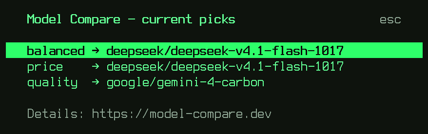
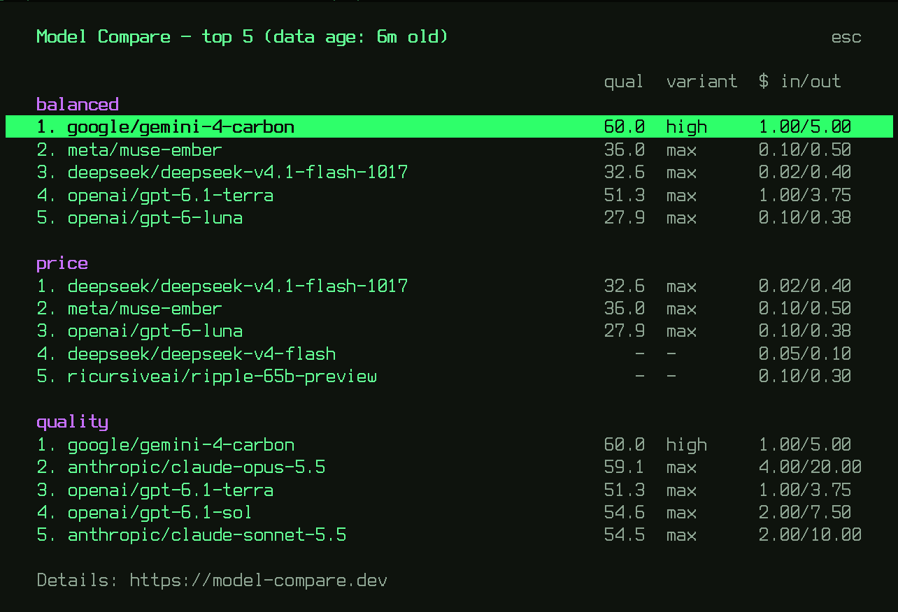

Best value-for-money LLM on OpenRouter
Adds three live aliases to OpenCode v2 that follow
model-compare ranking, steer requests to OpenRouter to the
ranked endpoint, and pin the scored reasoning depth.
Add model-compare-opencode-plugin to
opencode.jsonc (project or global). OpenCode installs and
loads the npm package automatically:
{ "$schema": "https://opencode.ai/config.json", "plugins": [ { "package": "model-compare-opencode-plugin", "options": { "source": "auto", "defaultPriority": "balanced" } } ] }
All options are optional. See
the plugin README
for fallback, custom weights,
pinDays, and minLead.
Each priority registers as a model inside the
openrouter provider and refreshes every 30 minutes while
OpenCode runs:
| Alias | Resolves to |
|---|---|
openrouter/model-compare/balanced |
best all-round value pick |
openrouter/model-compare/price |
best price pick (bulk or mechanical work) |
openrouter/model-compare/quality |
best quality pick (planning or code review) |
Set one as your root "model" in
opencode.jsonc, switch an open session with
alt+u (or /use-best [priority]), or bind
specific agents and headless runs:
For agents, use the alias in the agent's .md frontmatter:
--- description: Reviews changes for correctness mode: subagent model: openrouter/model-compare/quality ---
Headless:
opencode run --model "openrouter/model-compare/price" "Summarize test failures"
Two dialogs let you inspect or switch picks.

alt+m — current pick for each priority;
return switches to it.

alt+shift+m (or /model-compare) — top 5
per priority with quality, variant, and prices.
| Shortcut | Action |
|---|---|
alt+m |
open the current-picks dialog |
alt+shift+m |
open the top-5 report dialog (also /model-compare)
|
alt+u |
switch the session to your defaultPriority pick (same
as /use-best)
|
alt+e |
show a toast with the endpoint that served the last alias response |
return / esc |
pick the highlighted row / close the dialog |